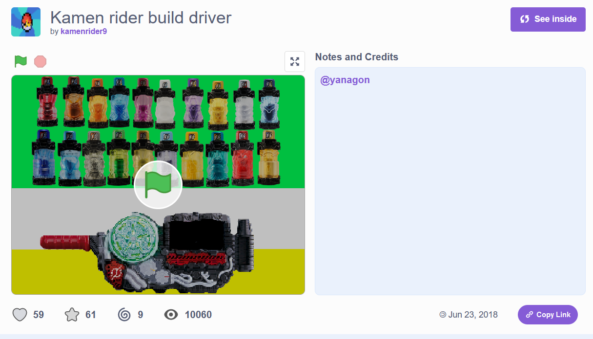
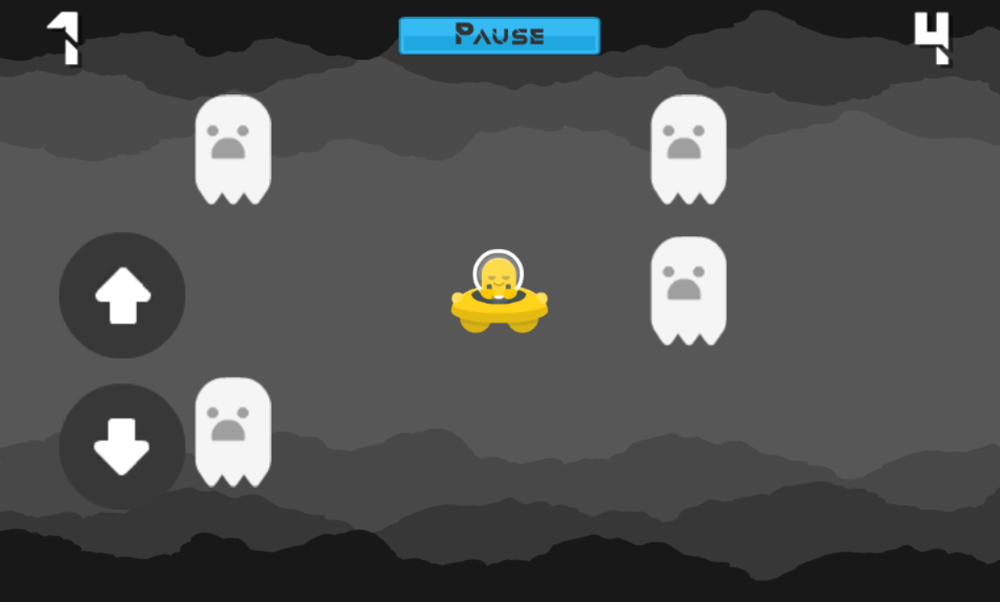
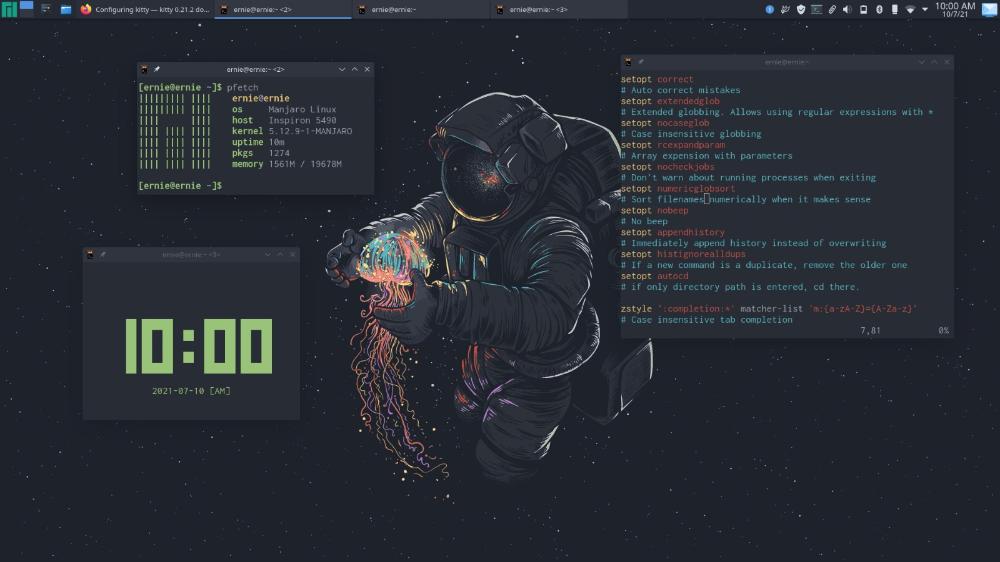
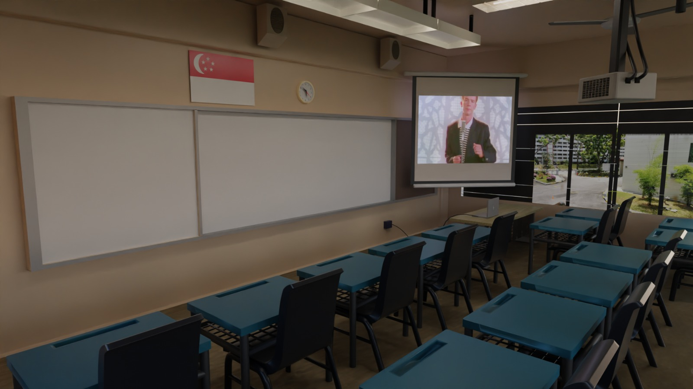
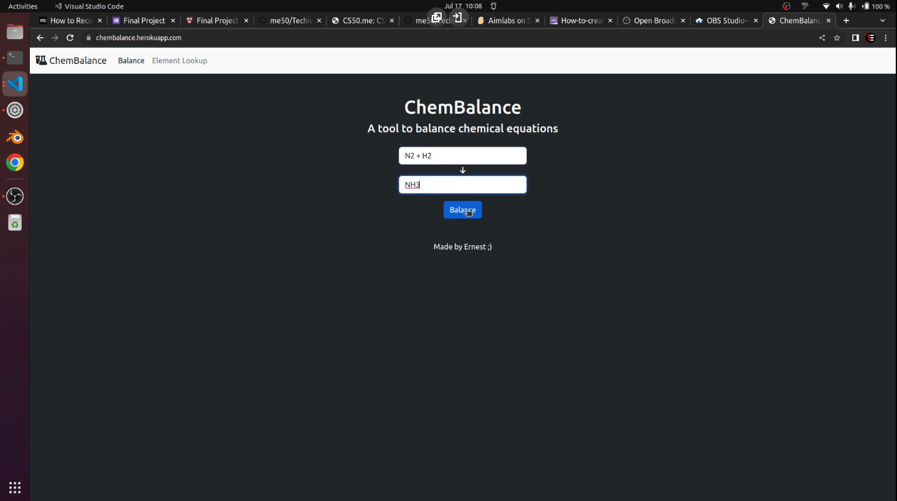
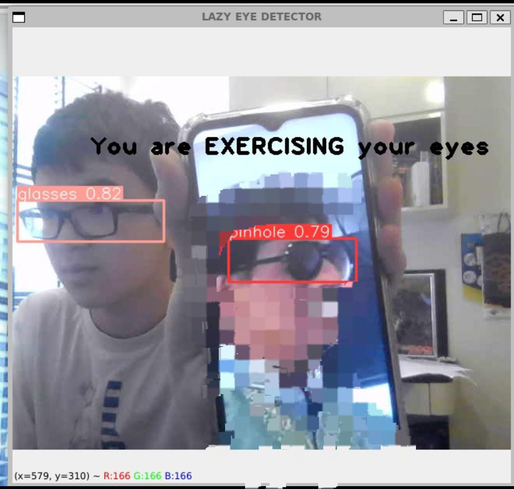
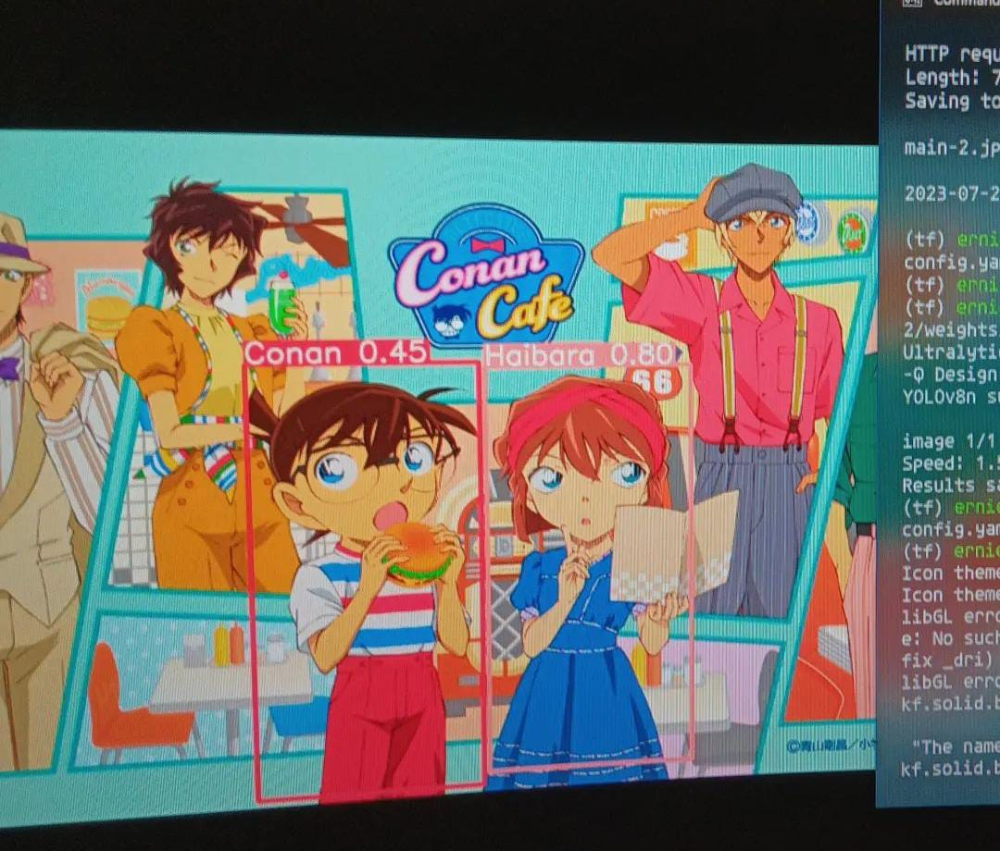

Scratch
2017-2019Made some cool projects with Scratch

Unity
2019-2020Made some cool projects with Unity

Linux
2020-2021Learnt how to use Linux
Flutter
2022-2023Made some cool projects with Flutter
Computer Vision
2023-2024Made some Computer Vision / ML Projects
Who am I?
Hi! I'm Techie Ernie.
Ever since young, I have been tinkering with computers. I've had many interests related to computers over the years, including 3D Modelling in Blender, video editing in Davinci Resolve and of couse, programming.
My journey first started in 2017 when I was introduced to Scratch as part of my school's curriculm. I picked up the logical thinking behind Scratch rather easily and started to make my own creative projects, often related to my interests. One such project included Kamen Rider belts. Kamen Rider was a series I really enjoyed watching at that time, so I decided to make various projects related to Kamen Rider.

My two most successful projects on Scratch had over 6k and 10k views
After playing with Scratch for a year of two, I felt like doing something more advanced - which was where Unity came in. I first heard of Unity from YouTube where Game Dev Youtubers such as Brackeys and Blackthornprod posted educational content about game dev. Inspired, I decided to download Unity on my school laptop with 4GB of RAM and an Intel Pentium processor. Needless to say, that didn't go too well..
That was when I borrowed my mother's Macbook Pro and started developing on it. At this point, I had my mind set on developing a mobile game - which I felt was much more accessible compared to PC games.
One of my first project ideas was to create a endless runner game like Subway Surfers. However, that project was quickly scrapped as I felt it was too complex for a beginner like me, so I went on to develop some 2D games such as platformers.
As such, my first actual game, Ernest's UFO Adventure, was born.

I put ads in the game and earned a dollar💀
After that, I took a break from game dev and eventually lost my interest in it. However, I had a newfound interest in ethical hacking, which was where my Linux journey began.
I fondly remember the early days where I started to install Kali Linux in VMs and play with tools such as Metasploit. While my interest in ethical hacking didn't last long, the introduction to Kali Linux led me to believe that Linux was superior to Windows.
Over the next few years, I was a strong advocate for Linux. I dual-booted Linux on my main laptop, and repurposed a spare laptop as a Minecraft server running on Linux. I loved tinkering with the command line and customising my desktop environments, which is something I never got to experience while using Windows. To this date, I feel like I can't leave Linux when I code - most of my projects are run in WSL.

At the same time, I developed a strong interest in Blender. After learning how to use Blender from the Donut Project, I went on to use 3D Modelling for many creations, such as this Classroom render:

In my second year of secondary school, I was introduced to CS50's Introduction to Computer Science - a course from Harvard University. This sparked my interest in programming again after not doing much in my first year of secondary school. My final project was a web app in Flask used to balance chemical equations, which I called ChemBalance.

Then, I started learning more about computer vision and machine learning. My projects include a facial recognition system to differentiate between Conan and Haibara from Detective Conan as well as a "Lazy Eyes Detector" which detects if a person is wearing regular glasses or pinhole glasses

